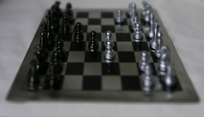

Anjali Thakrar and Shaina Chen | Fall 2021
For this lightfield camera project, our goal is to produce cool effects like depth refocusing and aperture adjustment using collections of large image sets taken over a plane that is orthogonally aligned to the optical axis.
Depth refocusing is the effect of focuses on various parts of the image at different depths. The basic idea is that closer objects have much more drastic position changes than objects farther away and thus averaging the images together with different amounts of shifts will cause for different parts of the image to be focused.
Aperature adjustment comes from the idea that averaging different amounts of images will emulate different aperature values. Less images will make the image appear to have a smaller aperature while larger sets of images will result in an increased aperature size for the final image. This conceptually makes sense because with a larger set of images, we are adding more images and expanding the amount of light that appear in the final image.
To see more detailed descriptions on the approach and final results, read the below sections.
For this part, we first process the images from the datasets in Stanford's collection of lightfield camera images. Each dataset has 289 images that were taken on a 17 x 17 grid with a certain (u, v) value for every image corresponding to the ray position. We also have the (x, y) coordinate location that the image was taken in relative to our 17 x 17 grid.
Then, to create the depth refocusing effect we need to shift images by different amounts so that different parts of the image are in focus. By shifting all the images by some amount and then averaging them together, this allows us to create an image that is an anverage of the light from all the rays captured by the sub-aperature images.
To create the depth refocusing effect, we follow the following steps:
1) Shift all the given (u, v) coordinates to share the same center of (0, 0) by subtracting the mean (u, v) coordinate value from all (u, v)s of all images.
2) Shift all images by some constant K * (u, v) so that new_x = x + c * u and new_y = y + c * v. I used np.roll() to perform the shift. This constant C usually is around the range [-0.4, 0.4] and different C values result in different areas being in focus.
3) Average all the shifted images together to create the final result.
Here are some gifs of results as well as some images to demonstrate how changing C will change the depth of the refocused area.
| Chess (K = [-0.2, 0.3]) | Legos (K = [-0.4, 0.4]) | Legos Truck (K = [-0.4, 0.4]) |
|---|---|---|
Looking at how different constant values impact the depth of the focused area, we see that as C goes from negative to positive, the area of focus shifts from the further away parts of the image to the objects that are closer to the camera.
| K = -0.1 | K = 0 | K = 0.2 |
|---|---|---|
| K = -0.2 | K = 0 | K = 0.2 |
|---|---|---|
| K = -0.1 | K = 0 | K = 0.2 |
|---|---|---|
Given a fixed constant K, we can simulate an adjustment in aperature by adding or removing sub-aperature images from the final averaged outcome. Conceptually, this makes sense because adding more sub-aperature images would be adding more light that passes through a specified aperature into the final average.
Here, we decided to have the smallest aperature image to be the image taken at the (x, y) value of (8, 8), which is the center image in the 17x17 grid.
1) Begin at N = 0 and call our depthrefocus() method on just the cneter image at (8,8).
2) Increment N by 1, which means that we will be taking all images from [8 - N, 8 - N] in the image grid to [8 + N, 8 + N] in the image grid. This is a total of 9 images when N = 1. Treat all these images as the image set and call depthrefocus() on this image set.
3) Repeat step 2) until we have all the images in the 17 x 17 image grid in the image set to be passed into depthrefocus().
Below are results from aperture adjustment. K = 0.15 for all, and the smallest aperture image is the center image (8,8).
| Chess | Legos | Legos Truck |
|---|---|---|
Here's what the smallest aperture and largest aperture look like for these three sets of images.
| Smallest aperture | Largest aperture |
|---|---|
|  | |
Overall, we learned that it is possible to create complex effects from simple techniques like shifting and averaging images. We also learned that sub aperture images are created by reorganizing the rays of light so that every image contains the light corresponding to a small aperature range, and that selecting different sets of these can allow us to mimic different aperatures even after the photographs have been taken.